Yaw travel envelope
Approximately 7.8° to one side and 2.2° to the other from centre, matching the mechanical aim window without exceeding bearing or cable-wrap limits.
Commanding precise yaw, the electronics pair an onboard screen for operation, calibration, and testing with a wire management PCB for clean plug-and-play integration.

Y4 EE
This section forms the first part of the documentation for all electronic subsystems. It begins by presenting the methodology used to develop the electronics for the entire robot. It then details the requirements, implementation, and testing of the yaw electronics subsystem. Finally, it presents the requirements, implementation, and testing of the complete electronic system at the robot level. The same structured approach is then applied consistently to the remaining electronic subsystems.
The development process followed a comprehensive V-shaped system methodology. This approach enabled the structured design, implementation, and rigorous unit testing of each distinct hardware and software (yaw, pitch, launcher, feeder) subsystem in isolation. Once isolated tests were verified, these elements were incrementally integrated and validated on the opposite side of the "V", culminating in a robust, fully functional final system.
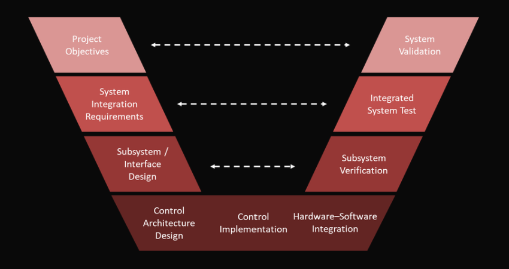
Approximately 7.8° to one side and 2.2° to the other from centre, matching the mechanical aim window without exceeding bearing or cable-wrap limits.
Software limits prevent the turret from entering the lateral space where teammates or judges can stand; commands that would violate the envelope are rejected or clamped.
Encoder feedback is required so yaw holding torque and drift are compensated during long match segments.
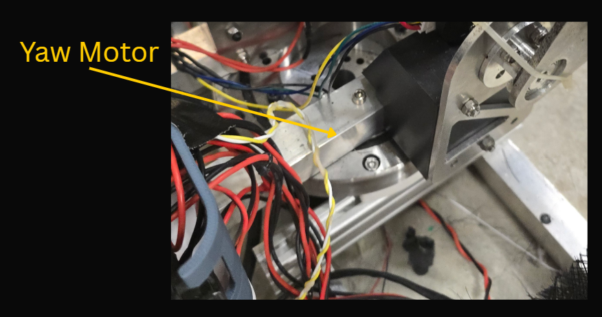
Damiao DM-J10010L-2EC Integrated brushless servo actuator (motor + driver + encoders)
The rationale for selecting the Damiao DL10010L actuator is presented in the Yaw Subsystem Design section.
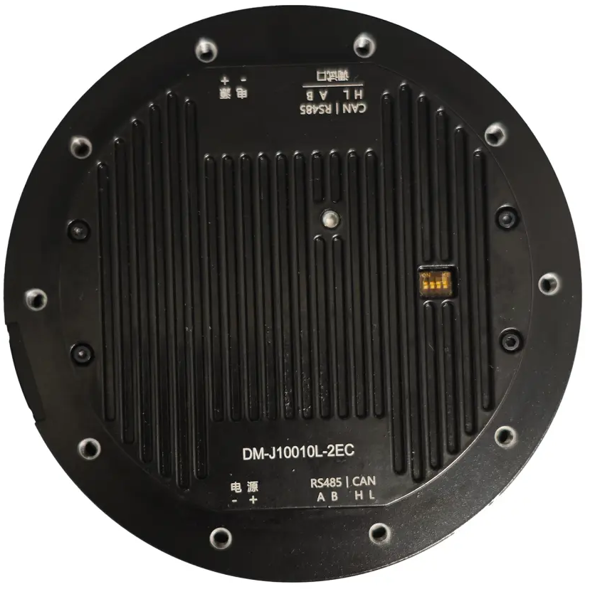
| Parameter | Value |
|---|---|
| Electrical — motor | |
| Rated voltage | 48 V DC (operating range typically 24–48 V) |
| Rated / peak phase current | 23.5 A / 95 A |
| Rated / peak torque | 40 N·m / 120 N·m |
| Rated speed | 70 rpm @ 24 V · 100 rpm @ 48 V |
| No-load speed (max) | 100 rpm @ 24 V · 200 rpm @ 48 V |
| Mechanism | |
| Reduction ratio | 10 : 1 |
| Pole pairs | 21 |
| Phase L / R | 85 µH / 0.11 Ω |
| Mechanical | |
| Outer Ø × height | 120 mm × 53 mm |
| Mass | ≈ 1372 g |
| Encoder (onboard) | |
| Resolution / count | 14-bit · 2× magnetic (single-turn, output-shaft referenced) |
| Interfaces | |
| Control bus | CAN @ 1 Mbps |
| Configuration / debug | UART @ 921600 bps (parameter tuning) |
The yaw subsystem is built around the Damiao DM-J10010L-2EC integrated servo actuator, which provides the required torque and precision within the compact turret envelope. Its built-in dual absolute magnetic encoders support closed-loop position control without additional sensing hardware, which simplifies the design and improves reliability. This allows the subsystem to achieve the required angular control range of approximately 7.8° to one side and 2.2° to the other from centre. Control commands are sent over a dedicated CAN bus at 1 Mbps, while parameter tuning is performed via a high-speed UART interface at 921600 bps. For operator safety, software clamps of +/- 10° are implemented to restrict motion.
Testing shown in yaw design
From the testing of yaw electronics, we found that the PID tuning for the Damiao motor can be done to achieve better acuracy and response
The turning process can be very tedious and time consuming hence it might be better to use AI based tuning to tune the PID for the Damiao motor. With the microntroller acting as a middle man between the AI (computer based) and the motor, it can be used to tune the motor to meet the accruracy and precision we need.
After verifying that each subsystem operates as intended on its own, the next step is to move toward whole-system control. At this stage, the focus shifts from isolated subsystem performance to coordinated system behaviour, where the pitch, yaw, launcher, feeder, and supporting electronics must work together under a single control structure to meet the electronics requirements.
Microcontroller
Primary control board for launcher signal coordination
The justification for using this primary control board was presented in the interim design, where it was stated that this microcontroller board was selected because it is one that Calibur Robotics is already familiar with, while still supporting launcher coordination, command sequencing, and integration with actuator and sensor interfaces during electronics bring-up.
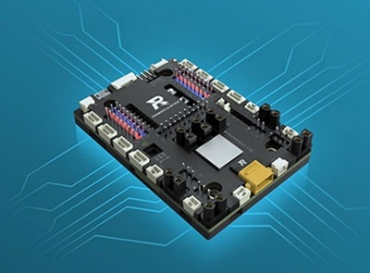
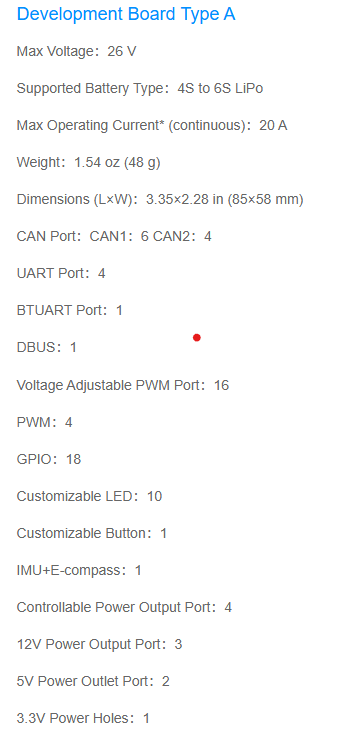
Remote controller
Manual draw, release, and emergency stop during bring-up
A remote controller is required for the competition, and it also provides flexibility in the mode of operation during testing, calibration, and safe launcher bring-up.
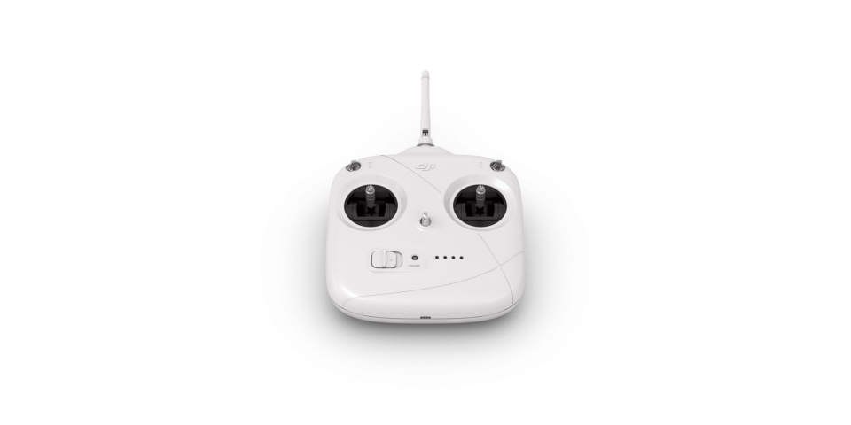
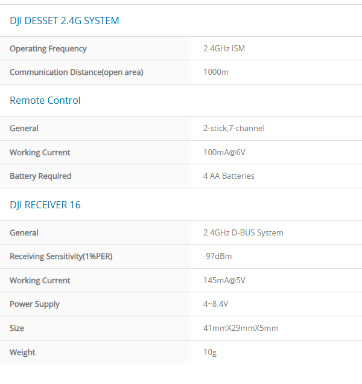
4.0″ class modules · SPI LCD · touch overlay technology trade-off
The pit crew UI was introduced to give operators clear and immediate visual feedback during robot operation, testing, and calibration. In other robots, pit crew members had to rely mainly on sound cues to tell if the system had encountered an error or completed a step. That approach was slow to interpret in practice and made fault identification less direct, especially during fast-paced testing. By moving this feedback onto a readable screen, the pit crew can identify errors faster and understand the robot state at a glance.
The screen also supports a wider range of control modes for the robot, which is useful during subsystem testing, calibration, and bring-up. Instead of limiting interaction to a small set of fixed inputs, the UI allows the pit crew to access different operating modes, monitor system status, and make adjustments more directly. This gives the team a more practical interface for development work and helps the robot be tested in a more controlled and efficient way.
Moving on from the interim design, a resistive touchscreen was initially selected because it was cheaper and gave the project more financial room for other expensive components in the system. This made it an attractive option during early design selection, especially when the budget had to be managed across multiple subsystems.
However, after testing, the resistive touchscreen was found to be difficult to use in practice. It often required multiple firm presses before inputs were registered, which made interaction slower and less reliable during robot operation, testing, and calibration. As a result, its usability was judged to be poor for the intended pit crew interface.
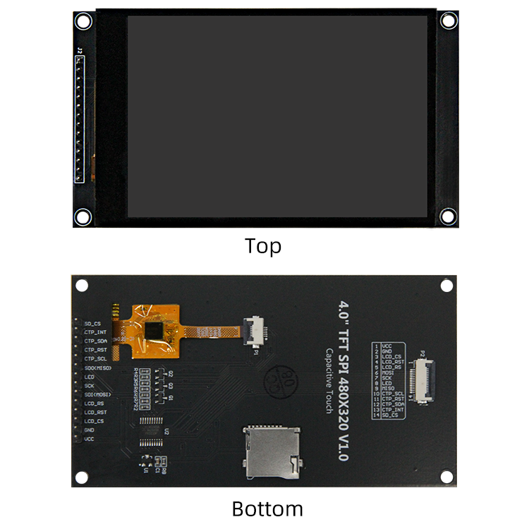
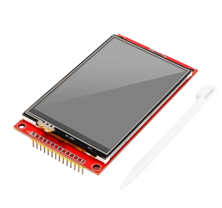
| Aspect | Capacitive (ST7796 SPI + CTP) | Resistive (typ. 4-wire) |
|---|---|---|
| Touch principle | Finger (or thin glove) couples to projected capacitance; multi-touch capable with controller (e.g. FT6336U) | Mechanical deflection of stacked films; single-point unless specially designed |
| Operator experience | Light tap; glass-like surface; familiar smartphone feel | Firmer press or stylus; matte stack can feel softer; stylus easily dropped in the pit |
| Optics | Higher clarity; fewer diffusing layers (per typical TN + glass stack) | Extra ITO/film layers can reduce contrast and add glare |
| Wear | Durable cover glass; no flex fatigue of a soft stack | Plastic overlay wears and can scratch; hinge-like fatigue over long cycles |
| Host interfaces | 4-line SPI for LCD + I²C for touch (plus INT/RST); shared bus with SD_CS on many boards | Often parallel or SPI LCD + analog or dedicated resistive controller; pin count varies |
| Calibration / drift | Factory-tuned matrix; occasional re-cal rare | Periodic calibration; edge accuracy can drift with temperature and wear |
| Environmental | Water or heavy moisture can false-trigger; dry wipe usually sufficient | Works with water films in some cases but pressure must couple through contaminants |
Why capacitive was chosen
For field adjustments next to a running launcher, the team prioritized fast, low-effort taps without hunting for a stylus, plus a brighter, cleaner readout for numbers under venue lighting. The 4.0″ 320×480 capacitive SPI module family on LCD Wiki documents a compact 14-pin header (LCD SPI, backlight, SD_CS, and CTP I²C), onboard level shifting for 5 V / 3.3 V MCUs, and an SD slot for assets—matching the RoboMaster controller wiring budget better than a resistive panel that pushes the operator toward stylus-based workflows. Resistive remains a valid low-cost fallback where gloves are thick or where EMI noise on the analog sense lines is easier to manage than capacitive moisture edge cases.
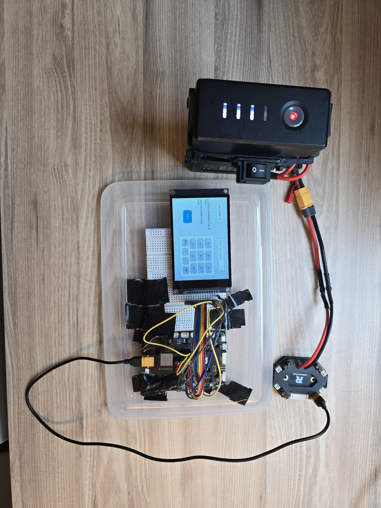
The GUI Testing Rig was created to test the GUI without the need for the robot to be present. It consists of a breadboard with the STM32F407VGT6 microcontroller, a 4.0" capacitive SPI touchscreen, and a power supply. The GUI is displayed on the touchscreen and the user can interact with it to test the functionality of the GUI.
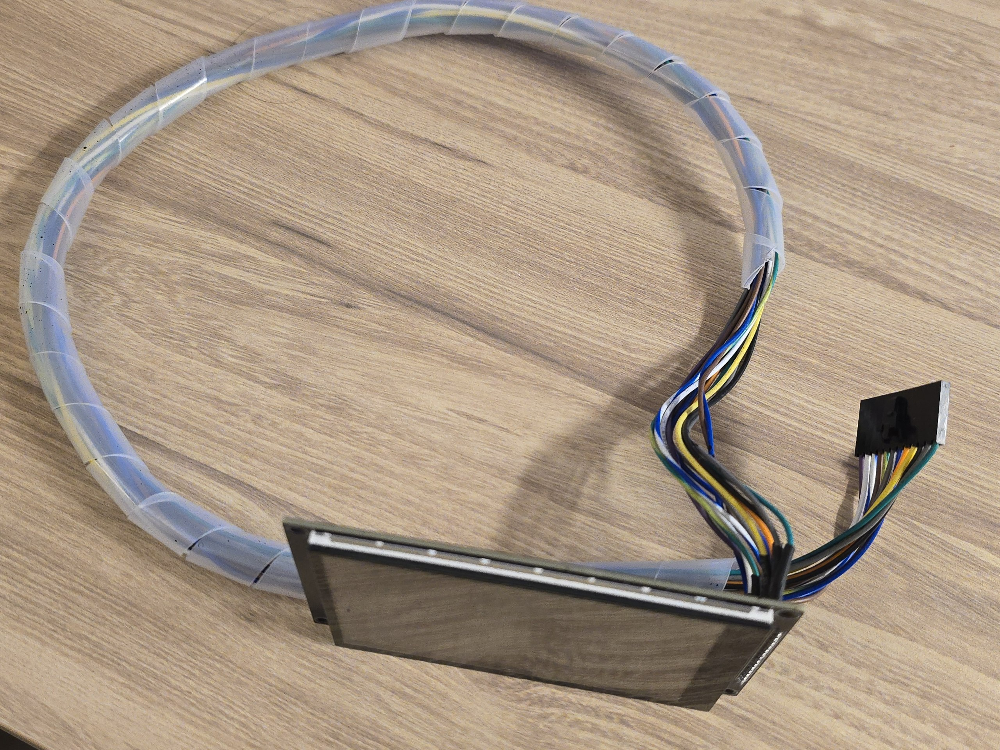
The image above shows the cables made to connect to the Wire Managment PCB with the some sleeve for wire protection and management. The cables are made using 22 AWG wires and connectors.
The increase in cable required the decrease in communication frequency from 48MHz to 1MHz to prevent signal loss and ensure reliable communication for the spi and I2C communication
However, testing the screen off the robot and on the the robot, the screen was not working as expected, the screen was not displaying the GUI and the touch was not working. From some testing, it was deemed that the electrical noise from the other systems were affecting it.
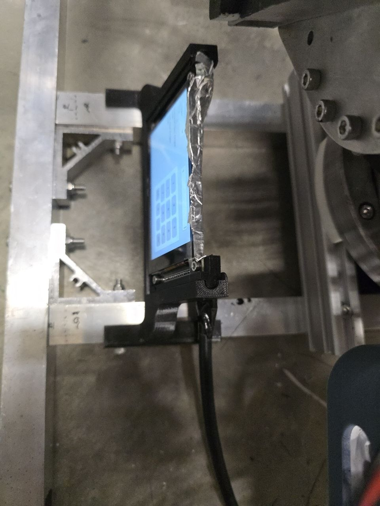
The image above shows the screen being shielded with aluminuim foil to reduce the electrical noise from the other systems. The cables used were also shielded.
Custom PCB · 100 × 100 mm · FR-4 · two-layer · field-serviceable
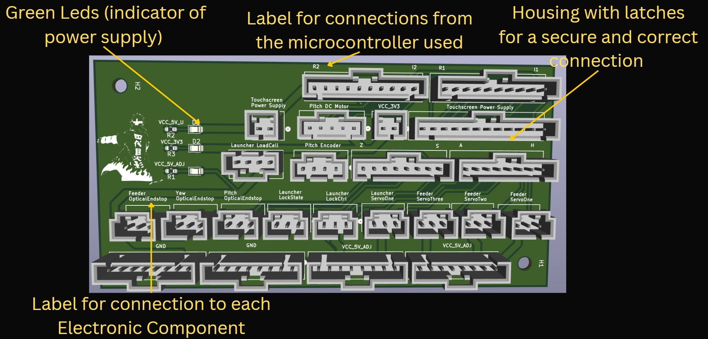
Isolated Dual-Channel H-Bridge Driver
The selected motor driver is a compact dual-channel brushed DC motor driver built around an isolated H-bridge architecture. It accepts 3.3 V to 5 V logic inputs and drives two DC motors from an external motor supply, with built-in overvoltage, undervoltage, and overtemperature protection for safer operation.
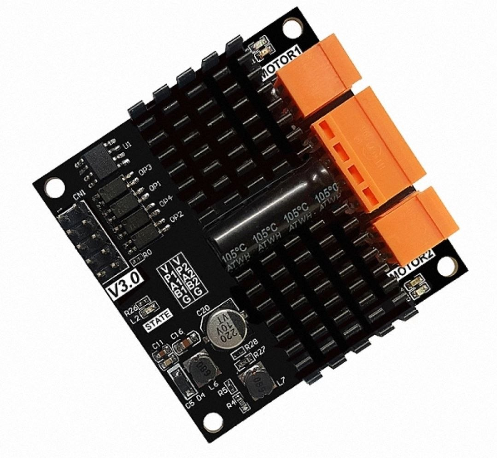
| Parameter | Value |
|---|---|
| Supply voltage range | 6.5–29 V (V2.0) · 5.6–33 V (V3.0) |
| Continuous current | 12 A (V2.0) · 12.8 A (V3.0) per channel |
| Power rating | 280 W (V2.0) · 380 W (V3.0) per channel |
| PWM frequency | Up to 60 kHz |
| Min PWM pulse width | 2 μs (V2.0) · 0.5 μs (V3.0) |
| Logic inputs | 3.3 V – 5 V (High speed isolated) |
| Control signals | 1× PWM, 2× Logic (INA/INB) per channel |
| Dimensions | 50 mm × 50 mm × 12.5 mm |
| Protection | Overvoltage, undervoltage, overtemperature |
The control side is electrically isolated from the power stage, which helps reduce noise coupling from the motors to the microcontroller. This allows for forward rotation, reverse rotation, braking, and coasting depending on the input combination. The driver can also work with external switches or limit switches without full MCU involvement, which makes it useful for simple standalone motion control or hardware interlocks. Overall, the driver provides a compact and practical solution for embedded motor control where high current output, simple direction logic, and electrical isolation are required.
5700mAh 22.8V LiPo (DJI TB48S)
The DJI TB48S is a high-capacity Intelligent Flight Battery featuring integrated charge and discharge management. Originally designed for the Matrice 600, it provides a stable and reliable power source with built-in safety monitoring for high-draw robotic applications.
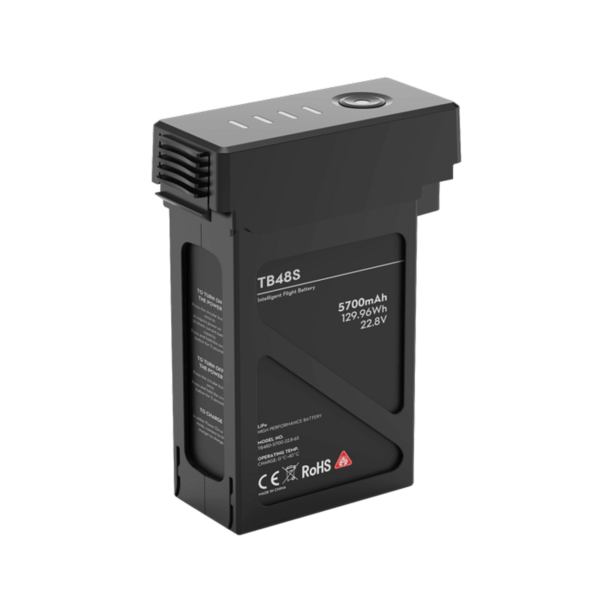
| Parameter | Value |
|---|---|
| Capacity | 5700 mAh |
| Voltage | 22.8 - 26.1 V |
| Type | LiPo 6S |
| Energy | 129.96 Wh |
| Net Weight | 680 g |
| Max Charging Power | 180 W |
| Operating Temp | -10° to 40° C (14° to 104° F) |
| Charge Temp | 5° to 40° C (41° to 104° F) |
The battery's internal management system ensures cells are balanced during charging and protected during discharge, which is critical for maintaining safety and longevity. It supports charging via standard DJI chargers or charging hubs, providing a practical and field-ready power solution.
The software architecture is implemented as multiple tasks under an RTOS, with the Control Task, Pitch & Yaw Task, and Launcher & Feeder Task each assigned dedicated stack memory. The Control Task acts as the central coordinator, receiving operator inputs from the remote controller and touch screen, then sending pitch and yaw angle commands to the Pitch & Yaw Task and shot commands to the Launcher & Feeder Task. Feedback is returned to the Control Task in the form of actual pitch and yaw angle and firing status. A larger stack allocation was given to the Control Task because it also handles the touchscreen interface, which has a higher memory demand than the other tasks. All three tasks run at the same priority level, allowing round-robin scheduling to be used for processor time sharing. This RTOS-based structure makes the software easier to organise, test, and extend.
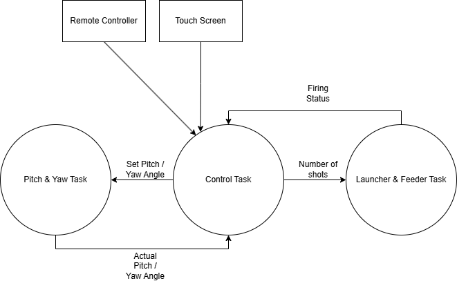
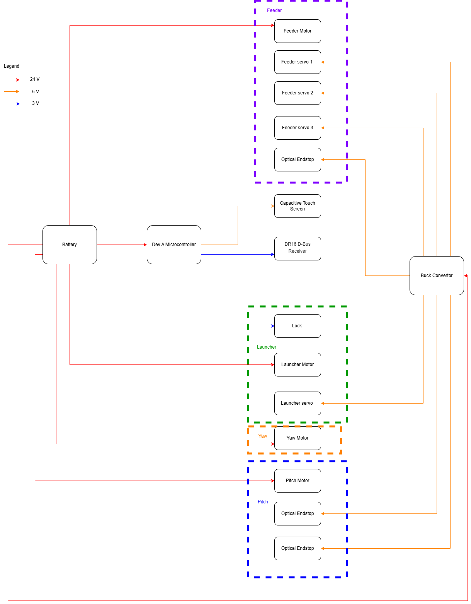
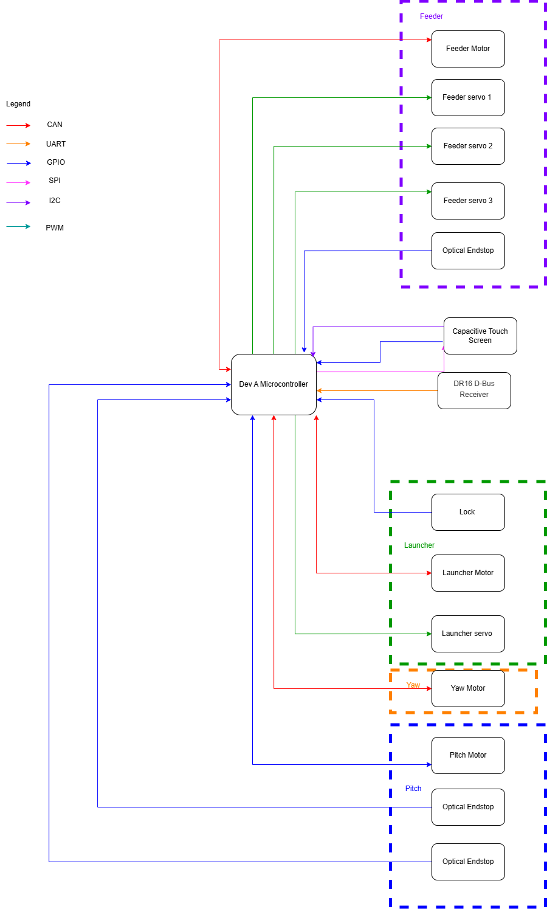